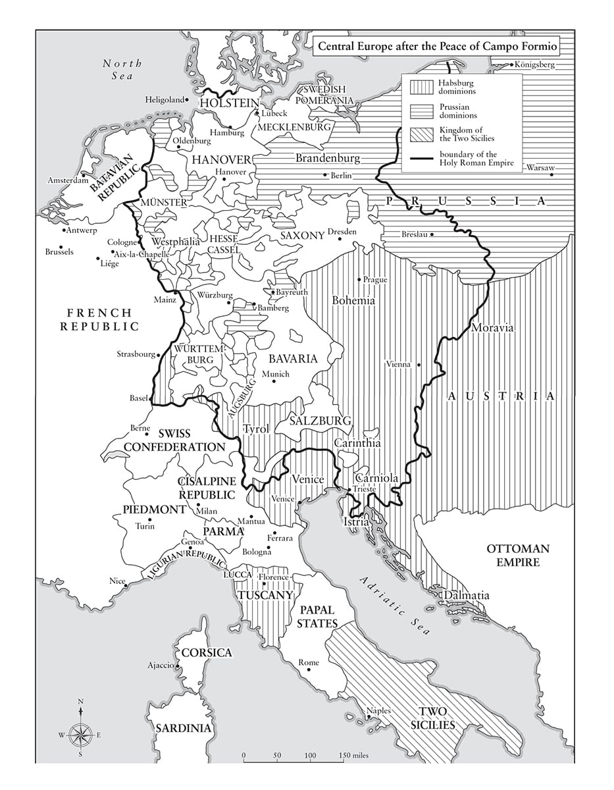

Chiến thắng là không đủ nếu không tận dụng được thành công.
• Napoleon nói với Joseph, tháng Mười một năm 1808
Theo quan điểm của tôi, người Pháp không quan tâm tới tự do và bình đẳng, họ chỉ có một cảm xúc, đó là về danh dự… Người lính đòi hỏi vinh quang, tiếng tăm, tưởng thưởng.
• Napoleon nói với Hội đồng Quốc gia, tháng Tư năm 1802
⚝ ✽ ⚝
Mọi thứ đều đưa tôi tới chỗ tin rằng thời điểm cho hòa bình giờ đã tới với chúng ta, và chúng ta cần tận dụng nó khi chúng ta có cơ hội để áp đặt các điều kiện, miễn là chúng hợp lý”, Napoleon gửi thư về Paris ngày 8 tháng Tư năm 1797. Những cuộc đàm phán với cái mà ông gọi là “triều đình hợm hĩnh và ngạo mạn này” bắt đầu từ ngày 15 tháng Tư, với đại diện toàn quyền của Áo là Hầu tước de Gallo, ra vẻ thông thái rởm khi nhất quyết yêu cầu rằng căn lều nơi các cuộc đàm phán diễn ra phải được chính thức tuyên bố là lãnh thổ trung lập. Napoleon vui vẻ nhượng bộ điểm này, giải thích với Đốc chính rằng “phần lãnh thổ trung lập này bị quân đội Pháp vây quanh mọi phía, và nằm giữa các lều trại của chúng ta”. Khi Gallo đề nghị thừa nhận sự tồn tại của Cộng hòa Pháp, Napoleon nói với ông ta rằng quốc gia này “không yêu cầu hay mong muốn sự thừa nhận. Nó đã hiện diện như Mặt Trời trên đường chân trời của châu Âu, thật quá tệ cho những ai không muốn nhìn nhận và hưởng lợi từ nó”. Gallo kiên trì giữ vững quan điểm, rõ ràng ông ta nghĩ mình đang nhượng bộ khi nói Áo sẽ thừa nhận nó với điều kiện nền Cộng hòa duy trì cùng danh xưng như Vua Pháp trước đây”. Những lời này đã cho phép Napoleon đưa ra luận điểm cộng hòa không chê trách vào đâu được, rằng vì người Pháp hoàn toàn dửng dưng với mọi thứ liên quan tới danh xưng, nên với chúng tôi việc chấp nhận điều khoản đó không thành vấn đề.
Napoleon tin rằng vị thế của ông sẽ mạnh hơn đáng kể nếu chỉ cần các Tướng Moreau và Hoche vượt sông Rhine. “Kể từ khi lịch sử bắt đầu ghi lại biên niên của các chiến dịch quân sự”, ông đã viết cho Đốc chính vào ngày 16 tháng Tư, “một con sông chưa bao giờ được coi là một chướng ngại đáng kể. Nếu Moreau muốn vượt sông Rhine, ông ta sẽ vượt qua nó… Các đạo quân sông Rhine có thể không có chút máu nào trong huyết quản của họ”. Nếu quân Pháp hiện diện trên đất Áo, ông quả quyết, “bây giờ chúng ta hẳn đã ở vào một vị thế có thể áp đặt điều kiện hòa bình theo một cách độc đoán”. Trên thực tế, Hoche có vượt sông vào ngày 18 tháng Tư, đúng ngày các thỏa ước sơ bộ được ký kết, tiếp đến là Moreau hai ngày sau đó. Cả hai sau đó đau lòng phát hiện ra rằng họ sẽ phải dừng các đạo quân của mình lại, trong khi đối thủ của họ thương lượng hòa bình.
Napoleon cũng thể hiện phong cách độc đoán tương tự trong việc đối phó với mối đe dọa có vẻ như đang xuất hiện từ thị quốc lâu đời Venice, vốn rất mong muốn duy trì độc lập của mình, song lại không có quân đội để đảm bảo điều đó. Ngày 9 tháng Tư, ông viết cho Thống lĩnh Ludovico Manin một bức thư yêu cầu Venice lựa chọn giữa chiến tranh và hòa bình. “Chẳng lẽ các vị cho rằng”, ông viết, “vì tôi đang ở giữa trung tâm nước Đức, nên tôi sẽ bất lực trong việc làm cho quốc gia đứng đầu trên thế giới được tôn trọng chăng?”. Mặc dù người Pháp đúng là có một số lý do chính đáng để bất bình với Venice – vốn đã ngả về phía Áo, đang nhanh chóng vũ trang và đã nổ súng vào một tàu chiến Pháp trên biển Adriatic – Napoleon hiển nhiên đã bắt nạt họ khi vài ngày sau ông phái Junot tới yêu cầu một câu trả lời trong vòng 24 tiếng cho lá thư của mình. Vấn đề xấu đi hơn nhiều vào ngày 17 tháng Tư, khi Verona, một phần lãnh thổ của Cộng hòa Venice rõ ràng đã không chịu học hỏi từ bài học của Pavia, Binasco, và Modena, đã nổi dậy trong một cuộc bạo động làm khoảng 300 đến 400 người Pháp bị tàn sát, nhiều người trong số này là thương binh đang điều trị trong bệnh viện thành phố.
“Tôi sẽ thực hiện những biện pháp tổng thể cho toàn bộ phần lãnh thổ trên đất liền của Venice”, Napoleon hứa với Đốc chính, “và tôi sẽ đưa ra những hình phạt cực kỳ nghiêm khắc khiến chúng không thể quên được”. Bourrienne sau này có ghi lại rằng, khi biết tin về cuộc bạo động, Napoleon đã nói, “Cứ bình tĩnh, lũ súc sinh đó sẽ phải trả giá; nền cộng hòa của chúng đã đến ngày tàn”. Vào 2 giờ sáng Thứ tư, ngày 19 tháng Tư năm 1797 – dù trên văn bản đề ngày chính thức là hôm trước – Napoleon ký Hiệp ước Sơ bộ Leoben. Việc ông, chứ không phải một đại diện toàn quyền từ Paris tới thương lượng và ký văn bản, là một dấu hiệu đáng kể cho thấy cán cân quyền lực so với Đốc chính đã ngả về hướng có lợi cho ông như thế nào. Đây không phải là hiệp ước hòa bình toàn diện chính thức giữa Pháp và Áo, vốn chỉ được ký vào tháng Mười ở Campo Formio, song Napoleon cũng sẽ thương lượng cả bản hiệp ước đó nữa. Theo các điều khoản của Leoben, Áo nhượng lại các công quốc Milan và Modena cũng như lãnh thổ Hà Lan thuộc Áo cho Pháp. Áo đồng ý thừa nhận “các giới hạn hợp thành” Pháp – được người Pháp coi là vươn tới tận sông Rhine – trong khi Pháp thừa nhận toàn vẹn lãnh thổ cho phần còn lại thuộc đế quốc của Francis. Các điều khoản bí mật buộc Áo phải nhượng tất cả lãnh thổ mà nó sở hữu ở Italy về phía tây sông Oglio cho Cộng hòa Cispadane, nhưng bù lại Áo sẽ nhận được toàn bộ lãnh thổ trên đất liền của Venice về phía đông sông Oglio, cũng như Dalmatia và Istria, trong khi lãnh thổ Venice ở phía tây sông Oglio cũng sẽ thuộc về Pháp. Napoleon chỉ đơn giản cho rằng ông ở vào vị thế có thể định đoạt được lãnh thổ Venice trước khi hiệp ước được phê chuẩn.
Nhìn bề ngoài, có vẻ như Áo đã thương lượng rất tốt, vì bờ trái sông Rhine sẽ được thỏa thuận vào một dịp trong tương lai, còn bản thân toàn vẹn lãnh thổ của Áo vẫn được tôn trọng. Biện hộ cho quá trình thương lượng của mình, Napoleon viết cho Đốc chính rằng Bologna, Ferrara, và Romagna “sẽ luôn nằm trong quyền lực của chúng ta”, vì chúng được cai quản bởi một nền Cộng hòa thân Pháp có thủ phủ ở Milan. Một lập luận ít thuyết phục hơn của ông là “Bằng cách nhường Venice cho Áo, Hoàng đế sẽ… buộc phải thân thiện với chúng ta”. Trong cùng lá thư, ông nói thẳng với Đốc chính rằng họ đã làm sai mọi thứ ngay từ lúc chiến dịch Italy bắt đầu: “Nếu tôi cứ nhất định tiến về Turin, tôi đã chẳng bao giờ vượt qua sông Po; nếu tôi cứ nhất định tiến về thành Rome, tôi hẳn đã mất Milan; nếu tôi cứ nhất định tiến tới Vienna, có lẽ tôi đã làm mất nền Cộng hòa. Kế hoạch thực sự để tiêu diệt Hoàng đế chính là kế hoạch tôi đã làm theo”. Những nhận xét tiếp theo của Napoleon khi đó nghe có vẻ thiếu thành thật một cách đáng ngờ: “Còn về phần mình… Tôi đã luôn coi bản thân chẳng là gì cả trong những chiến dịch tôi chỉ huy, và tôi đã tiếp tục tiến về Vienna sau khi đã giành được nhiều vinh quang hơn mức cần thiết để cảm thấy hạnh phúc”. Khi yêu cầu được phép quay về nước, ông hứa: “Sự nghiệp dân sự của tôi sẽ tương tự sự nghiệp quân sự của tôi bởi sự đơn giản của nó”. Hẳn ông khi đó đang tưởng tượng ra mình trong vai người anh hùng cổ đại Lucius Quinctius Cincinnatus, người đã trở về với trang trại và cái cày của mình sau khi cứu nguy cho Cộng hòa La Mã, và vì đây là những báo cáo bán chính thức, những đoạn không bí mật của nó được đăng tải trên Moniteur , nên rất có thể ông viết ra những dòng trên để dành cho công chúng cũng như để khai sáng cho “đám luật sư vô lại” của Đốc chính, những kẻ mà dẫu sao cũng đã phê chuẩn các điều khoản của Leoben với tỉ lệ bốn trên một, bởi chỉ mỗi Jean-François Reubell – người nghĩ rằng các điều khoản là quá hà khắc với Áo – phản đối.
Trong quá trình thương lượng, Công tước Modena đã tìm cách hối lộ Napoleon 4 triệu franc để không bị phế truất. Theo lời kể hoàn toàn không đáng tin cậy từ Bourrienne, các nhà thương thuyết của Áo, Gallo, và Bá tước-Tướng von Merveldt, thậm chí đã đề xuất dành cho ông một công quốc ở Đức, và Napoleon đã trả lời: Tôi cảm ơn Hoàng đế, nhưng nếu sự vĩ đại là dành cho tôi, nó sẽ tới từ Pháp. Vào lúc đó, Áo có vẻ hài lòng với các điều khoản Leoben. Lời phàn nàn duy nhất của Gallo là rất vặt vãnh, khi ông ta “muốn văn bản hiệp ước được chép lại trên giấy da và các dấu triện cần to hơn”, điều được Napoleon vui lòng chiều theo.
Ngày 20 tháng Tư, người Venice tự giao mình vào tay Napoleon bằng cách nổ súng giết chết một thuyền trưởng Pháp tên là Laugier sau khi ông ta neo đậu tàu của mình trái phép gần kho thuốc súng trên đảo Lido của Venice. Biến cố này đã cho Napoleon cái cớ ông cần đối với việc kiểu gì ông cũng sẽ làm: đòi Venice trục xuất Đại sứ Anh và những người Pháp lưu vong ủng hộ nhà Bourbon, giao nộp tất cả hàng hóa Anh, trả một khoản “đóng góp” 20 triệu franc và bắt giữ “những kẻ sát hại” Laugier (có cả một đô đốc Venice xuất thân quý tộc). Napoleon tảng lờ lời hứa của viên tổng trấn về việc bồi thường cho vụ tàn sát ở Verona, nói rằng các phái viên của ông này “ướt sũng máu người Pháp”. Thay vào đó, ông đòi quân đội Venice phải triệt thoái khỏi các lãnh thổ trên đất liền của Venice mà ông cần kiểm soát trong tay, trước khi các điều khoản bí mật của Leoben có hiệu lực. Cùng lúc, ông cổ vũ các cuộc nổi dậy ở Brescia và Bergamo, và vào ngày 3 tháng Năm, ông tuyên chiến. Cuộc thảm sát ở Verona bị trừng phạt bằng một khoản tiền 170.000 sequin (khoảng 1,7 triệu franc) thành phố phải nộp, cùng việc tịch thu tất cả mọi thứ có giá trị trên 30 franc từ hiệu cầm đồ thành phố. Có những cuộc hành quyết bằng treo cổ và hình phạt lưu đày tới Guiana thuộc Pháp ở Nam Mỹ, được chính quyền cách mạng chọn để đưa tới đây những nhân vật mà họ không hoan nghênh. Bát đĩa vàng bạc của nhà thờ bị sung công, cũng như các bức tranh, các bộ sưu tập thực vật, và kể cả “các vỏ sò thuộc về thành phố và các cá nhân.”
Chỉ 10 ngày sau khi tuyên chiến với Venice, Napoleon tạo ra một cuộc đảo chính trong thành phố. Sử dụng thư ký phái bộ Pháp Joseph Villetard để phá hoại giới chóp bu chính trị tại đây bằng những lời đe dọa về sự trừng phạt của người Pháp, khiến viên tổng trấn và Thượng viện – những người có cha ông từng chặn đứng cả Đế quốc Ottoman hùng mạnh – đã ngoan ngoãn thủ tiêu chính mình sau 1.200 năm tồn tại với tư cách một quốc gia độc lập. Họ cũng tìm cách hối lộ Napoleon, lần này là 7 triệu franc. Ông trả lời “Máu người Pháp đã đổ do sự phản trắc; nếu các vị đề nghị với tôi những kho báu của Peru – nếu các vị có thể lấy vàng phủ kín toàn bộ lãnh thổ của mình – sự đền tội vẫn là chưa đủ: con sư tử của St Mark(*) nhất định phải liếm bụi đất”. Ngày 16 tháng Năm, 5.000 quân Pháp dưới sự chỉ huy của Tướng Louis Baraguey d’Hilliers tiến vào Venice như “những người giải phóng”, và bốn con ngựa bằng đồng thau có lẽ đã từng trang hoàng cho Cổng vòm Trajan ở thành Rome bị gỡ xuống khỏi mái nhà thờ San Marco và mang về Louvre, nơi chúng lưu lại cho tới khi được trở về vào năm 1815.
Hiệp ước với Chính phủ bù nhìn thân Pháp mới của Venice nói rõ Chính phủ này cần cung cấp ba chiến hạm chủ lực và hai tàu khu trục cho hải quân Pháp, trả một khoản “đóng góp” 15 triệu franc, cung cấp 20 bức tranh và 500 bản thảo viết tay, và bàn giao lại các lãnh thổ trên đất liền mà Pháp muốn chia cho Cộng hòa Cispadane và Áo. Đổi lại, Pháp bày tỏ “tình hữu nghị vĩnh cửu”. Tất cả những động thái này được thực hiện mà không có sự tham gia của Đốc chính. Vào đầu chiến dịch 1796, Napoleon đã không được phép ký thỏa thuận đình chiến với Piedmont mà không có sự cho phép của Saliceti, người (cho dù có cảm tình với Napoleon) trên danh nghĩa là Ủy viên đại diện của Đốc chính. Nhưng kể từ lúc đó, ông đã ký bốn thỏa ước hòa bình quan trọng trên quyền hạn của chính mình – với Rome, Naples, Áo, và giờ là Venice.
Ông chuẩn bị ký tiếp cái thứ năm. Vào ngày 23 tháng Năm, giao tranh trên đường phố đã nổ ra ở Genoa giữa những người giacobino dân chủ thân Pháp và lực lượng của tổng trấn cùng Thượng viện Genoa. Chính quyền giành phần thắng, và những tài liệu được phát hiện đã cho thấy vai trò của Saliceti và Faipoult trong việc nhen nhóm cuộc nổi dậy bị thất bại. Napoleon nổi xung với những người dân chủ ở Genoa vì đã nổi dậy quá sớm, song ông cũng sử dụng cái chết của một số người Pháp làm cái cớ để phái sĩ quan phụ tá Lavalette của mình tới phỉnh phờ chính quyền Genoa. Giống như chính quyền Venice, họ đã nhanh chóng đầu hàng, và đích thân Napoleon soạn thảo bản hiến pháp cho Cộng hòa Ligurian mới – một lần nữa không có bất cứ can thiệp nào từ Đốc chính.(*) Văn bản này dựa trên Hiến pháp Pháp năm 1795, đưa ra một hệ thống lập pháp lưỡng viện với số lượng thành viên lần lượt là 150 và 300, ban bố tự do tôn giáo, bình đẳng dân sự và các biện pháp tự trị địa phương, những nguyên tắc không hề thể hiện chủ nghĩa Jacobin thuần túy thời kỳ đầu của ông hay tinh thần báo thù kiểu Corse chống lại Genoa (như một số người đương thời giả định). Quả thực, sau khi những người dân chủ phá hủy bức tượng Andrea Doria người anh hùng vĩ đại của Genoa, Napoleon đã quở trách họ, viết rằng Doria là “một thủy thủ vĩ đại và một chính khách vĩ đại. Vào thời của ông chế độ quý tộc đồng nghĩa với tự do. Cả châu Âu ghen tị với thành phố các bạn vì đã hân hạnh sinh ra con người nổi tiếng đó. Tôi tin rằng các bạn sẽ bỏ công sức dựng lại tượng của ông: tôi xin các bạn cho phép tôi gánh vác một phần chi phí của việc đó.”
•••
Nơi ở chính của Napoleon vào mùa xuân năm 1797 là Cung điện Mombello ở ngoại ô Milan, nơi ông triệu tập Miot de Melito tới để bàn bạc. Miot nhận thấy sự huy hoàng trong cuộc sống hằng ngày của Napoleon tại đó. Napoleon không chỉ đưa gia đình đến sống với mình – đợt đầu tiên là mẹ ông, Joseph, Louis, Pauline, và ông chú Joseph Fesch, rồi sau đó còn thêm nữa – mà ông còn duy trì một chế độ nghi lễ gần như ở triều đình. Giới quý tộc Italy xuất hiện tại bàn ăn của ông thay vì các sĩ quan phụ tá, các bữa tiệc diễn ra trước công chúng như từng diễn ra tại Versailles dưới thời Bourbon, và Napoleon thể hiện một sở thích rất phi cộng hòa dành cho những kẻ tôi tớ. Đám người này được trả tiền từ một tài sản mà bản thân ông tuyên bố lên tới 300.000 franc vào lúc đó. Bourrienne khẳng định tài sản này lên tới hơn 3 triệu franc – tương đương tiền trả lương hàng tháng của cả Đạo quân Italy. Dù thế nào đi nữa, nó cho thấy không chỉ các tướng lĩnh của ông đã tước đoạt của Italy.
Miot khẳng định trong hồi ký của ông (phần lớn được viết bởi người con rể, Tướng Fleischmann) rằng vào ngày 1 tháng Sáu năm 1797, Napoleon dẫn ông đi dạo trong khu vườn ở Mombello và nói, “Ông có tin tôi chiến thắng ở Italy để làm giàu cho đám luật sư tạo thành Đốc chính, cho những kẻ như Carnot và Barras? Thật là một ý tưởng!.. Tôi mong muốn làm suy yếu phe Cộng hòa, nhưng chỉ vì lợi ích của riêng tôi… Về phần tôi, Miot thân mến, tôi đã nếm mùi quyền lực và tôi sẽ không từ bỏ nó”. Ngoài ra, người ta còn kể là ông đã nói về người Pháp: “Hãy cho họ những thứ lòe loẹt vô giá trị – thế là đủ với họ; họ sẽ vui vẻ và để bị dắt mũi, chừng nào đoạn cuối mà họ đang đi tới được khéo léo che giấu khỏi họ”. Thế nhưng toàn bộ lời phát biểu cay độc này – mà nhiều nhà sử học đã nhìn nhận theo nghĩa đen – không có vẻ đúng sự thật. Liệu một chính khách tinh tế như Napoleon có thể đơn giản buột miệng nói ra mức độ tham vọng của mình (vào thời điểm đó là phản quốc) về việc hủy hoại nền Cộng hòa Pháp với một công chức như Miot de Melito, người mà ông không thể biết rõ về lòng trung thành, và còn khẳng định là mình nhớ lại chính xác cuộc trò chuyện nhiều thập kỷ sau đó?
Chính vào thời gian này, khi có nhiều người nằm dưới tầm mắt ông tại Mombello, Napoleon bắt đầu can thiệp liên tục vào chuyện yêu đương của các em ông. Ngày 5 tháng Năm năm 1797, Elisa 21 tuổi cưới một quý tộc người Corse, Đại úy Felice Baciocchi, người sau đó được thăng cấp chóng mặt trong quân đội, cuối cùng trở thành một Thượng nghị sĩ và Hoàng thân của Lucca, khôn khéo lờ đi vài lần ngoại tình của vợ mình. Tháng tiếp theo, vào ngày 14 tháng Sáu, dưới sự cổ vũ và chỉ dẫn tương tự của Napoleon, Pauline 17 tuổi cưới Tướng Charles Leclerc 22 tuổi, người đã phục vụ cùng Napoleon ở Toulon và cũng từng chiến đấu tại Castiglione và Rivoli. Napoleon biết Pauline lúc đó đang yêu một người khác, người mà bà mẹ Letizia của họ nghĩ là không phù hợp, song ông vẫn ủng hộ cuộc hôn nhân bất chấp việc này. Ông cũng cổ vũ chàng kỵ binh Murat theo đuổi một em gái khác của mình, Caroline, và họ kết hôn vào tháng Một năm 1800.
•••
Tại Paris, Đốc chính đang ở một vị thế bấp bênh. Với lạm phát ngoài tầm kiểm soát – giá giày đã tăng 40 lần vào năm 1797 so với năm 1790 – và tiền giấy, assignat , giao dịch ở 1% mệnh giá, nền chính trị đang ở trạng thái sôi sục. Sự bất bình với chính quyền trở nên rõ ràng vào ngày 26 tháng Năm, khi Hầu tước de Barthélemy, một người bảo hoàng lập hiến, trở thành ủy viên Đốc chính sau khi những người bảo hoàng giành phần thắng trong các cuộc bầu cử. Đốc chính giờ đây bao gồm Barras và Carnot, các luật sư Reubell, Louis de La Révellière-Lépeaux, và Barthélemy, bốn người đầu đều tham gia kết án tử hình nhà vua, cho dù lúc này Carnot đang chuyển mạnh sang nhắm tới những người trung dung tự do, không bảo hoàng hơn. Napoleon đã không đóng một vai trò nổi bật như vậy trong việc cứu vãn nền Cộng hòa hồi tháng Vendémiaire chỉ để chứng kiến nó bị thay thế bởi các phần tử bảo hoàng, cho nên ông đã cử Lavalette về Paris để theo dõi các tiến triển chính trị ở đó. Lavalette phát hiện ra các âm mưu dọn đường cho sự trở về của nhà Bourbon, một trong những âm mưu đó có sự dính líu của Tướng Charles Pichegru, một cựu giảng viên quân sự tại Brienne và là người chinh phục Hà Lan, song cũng can dự vào các âm mưu của phe cực tả; việc phát giác ra một âm mưu như vậy đã dẫn tới chuyện François-Noël Babeuf – nhà báo, nhân vật gây kích động, người có những tư tưởng về căn bản là cộng sản (cả tên gọi lẫn khái niệm này khi đó vẫn chưa được phát kiến ra) – bị xử tử trên máy chém hồi cuối tháng Năm.
Napoleon đặc biệt nhạy cảm với các phản ứng đối lập lại những hành động của ông tại Nghị viện. Khi một đại biểu trung dung, cựu thành viên Girondin, tên là Joseph Dumolard có bài phát biểu than phiền rằng Venice đã bị đối xử bất công, rằng Nghị viện đã bị giữ không cho biết gì về các hiệp ước của Napoleon, và rằng “Pháp” (qua đó ông ta muốn ám chỉ Napoleon) đã vi phạm luật pháp quốc tế qua việc can thiệp vào các công việc nội bộ của những quốc gia có chủ quyền, Napoleon đã phản ứng dữ dội. “Đám luật sư ngu dốt và ba hoa đã hỏi vì sao chúng ta chiếm Venice”, ông nói với Đốc chính, “nhưng tôi cảnh báo các ngài, và tôi nói nhân danh 80.000 người, rằng cái thời mà đám luật sư hèn nhát và những kẻ bép xép thảm hại đưa những người lính lên máy chém đã qua rồi; và nếu các ngài ép buộc họ, đội quân Italy sẽ hành quân về Clichy, và các ngài hãy liệu chừng!” Clichy vừa là tên của câu lạc bộ bảo hoàng trên phố Clichy, vừa là tên của cửa ô Paris mà một đạo quân có thể qua đó tiến vào thành phố.
Napoleon dùng bản thông cáo nhân ngày Bastille thất thủ gửi cho quân đội để cảnh cáo lực lượng chống đối trong nước rằng “Những kẻ bảo hoàng, ngay khi chúng lộ mặt, sẽ không còn tồn tại nữa”. Ông hứa về “Cuộc chiến không khoan nhượng với những kẻ thù của nền Cộng hòa và hiến pháp!” Năm ngày sau, ông tổ chức lễ kỷ niệm lớn tại Milan, nhằm chuyển tải tới Pháp thông điệp rằng Đạo quân Italy với tư cách những người cộng hòa là đáng tin cậy hơn các “quý ông” của Đạo quân sông Rhine. Sự ganh ghét lẫn nhau này giữa hai đạo quân gay gắt tới mức khi sư đoàn của Bernadotte từ Đức tới Italy đầu năm 1797, những cuộc ẩu đả đã nổ ra giữa các sĩ quan, và khi Napoleon trao cho Bernadotte vinh dự mang các quân kỳ đoạt được ở Rivoli về Paris, một số người đã cho rằng đó là cái cớ để đẩy ông ta khỏi Italy. Mối quan hệ giữa Napoleon với Bernadotte đầy tham vọng và độc lập luôn căng thẳng, và còn trở nên căng thẳng hơn nữa vào năm tiếp theo khi Bernadotte cưới vị hôn thê cũ của Napoleon, Désirée Clary.
•••
Ngày 7 tháng Bảy năm 1797, Napoleon ban hành hiến pháp của nền Cộng hòa Cisalpine (“ở phía này dãy Alps”) mới. Nó bao gồm Milan (thủ đô), Como, Bergamo, Cremona, Lodi, Pavia, Varese, Lecco, và Reggio, đại diện cho một bước đi lớn hơn hướng tới hình thành một định danh và ý thức về quốc gia Italy so với Cộng hòa Cispadane, vì có số lượng lớn người Italy tình nguyện gia nhập các đơn vị quân đội được thành lập cho nhà nước này. Napoleon nhận thức được rằng một quốc gia Italy rộng lớn, thống nhất, thân Pháp, bao phủ đồng bằng Lombardy và xa hơn sẽ cung cấp sự bảo vệ chống lại chính sách phục thù của Áo, đem đến cho ông cơ hội một lần nữa tấn công Styria, Carinthia, và Vienna nếu cần thiết. Hiến pháp của nền Cộng hòa, dựa trên Hiến pháp Pháp, được soạn thảo bởi bốn ủy ban dưới sự chỉ đạo của ông, nhưng vì những cuộc bầu cử đầu tiên của Cộng hòa Cispadane từng chứng kiến quá nhiều tu sĩ được bầu vào chính quyền, nên lần này Napoleon đã đích thân chỉ định năm Ủy viên Đốc chính và toàn bộ 180 nhà lập pháp của nền Cộng hòa, với Công tước Serbelloni là Tổng thống đầu tiên.
Đến giữa tháng Bảy, tình hình ở Paris đã trở nên nguy hiểm. Khi Tướng Hoche, một nhân vật cộng hòa, được cử làm Bộ trưởng Chiến tranh với hy vọng trấn áp sự chống đối chính quyền, ông ta đã bị các thành viên Nghị viện cáo buộc vi phạm hiến pháp vì chưa đến 30 tuổi, độ tuổi tối thiểu để giữ vị trí trong Chính phủ – riêng các ủy viên Đốc chính phải từ 40 – và ông ta buộc phải từ chức chỉ sau năm ngày tại nhiệm. Napoleon, lúc đó 27 tuổi, liền để tâm chú ý. “Tôi thấy rằng Câu lạc bộ Clichy có ý dẫm qua xác tôi để hủy diệt nền Cộng hòa”, ông tuyên bố đầy kịch tính khi viết cho Đốc chính ngày 13 tháng Bảy, sau khi Dumolard đi xa tới mức đưa ra một đề nghị chỉ trích ông tại Nghị viện. Sự phân chia quyền lực theo Hiến pháp Năm III ban hành tháng Tám năm 1795 đồng nghĩa với việc trong khi Đốc chính không thể giải tán Nghị viện, Nghị viện cũng không thể áp đặt chính sách lên các Ủy viên Đốc chính. Vì không có một tòa án nào có quyền phán xử cao hơn, tình hình chính trị ở Paris đã lâm vào ngõ cụt.
Ngày 17 tháng Bảy, Charles-Maurice de Talleyrand trở thành Bộ trưởng Ngoại giao nhiệm kỳ đầu tiên trong bốn nhiệm kỳ tại vị của ông. Thông minh, lười nhác, tinh tế, đi nhiều, có tật bẩm sinh ở chân, ưa lạc thú, từng là Giám mục Autun (giáo xứ mà ông ta chẳng bao giờ đến thăm nom) trước khi bị rút phép thông công năm 1791, Talleyrand có thể truy nguyên nguồn cội tổ tiên của mình (ít nhất với sự hài lòng của bản thân) có từ thời các bá tước lãnh chúa của Angoulême và Périgord thế kỷ 9. Ông ta đã đóng góp vào Tuyên ngôn Nhân quyền và Hiến chế Dân sự của Tăng lữ, và đã bị buộc phải sống lưu vong ở Anh và Mỹ từ năm 1792 đến 1796. Trong một chừng mực nào đó, ông ta có một nguyên tắc chỉ nam, đó là thiện cảm dành cho Hiến pháp Anh, cho dù ông ta không bao giờ để sự nghiệp hay sự an nhàn của mình bị lâm nguy dù chỉ trong khoảnh khắc để cổ vũ cho điều đó hay bất cứ điều gì khác. Trong nhiều năm, Napoleon đã dành cho ông ta một sự ngưỡng mộ dường như vô biên, thường xuyên viết cho ông ta, và tin cậy gọi ông ta là “Vua đàm luận châu Âu”, cho dù đến cuối đời ông đã nhìn thấu hoàn toàn ông ta, khi nói, “Ông ta hiếm khi đưa ra lời khuyên, song có thể khiến cho người khác lên tiếng… Tôi chưa từng biết bất cứ ai lại hoàn toàn dửng dưng với cái đúng và cái sai đến thế”. Talleyrand phản bội Napoleon vào đúng lúc thích hợp, đúng như ông ta đã làm với mọi người khác, và Napoleon coi đó là sự xúc phạm với riêng ông. Triển vọng ông ta sẽ chết bình yên trên giường là bằng chứng với Napoleon vào cuối đời rằng “không thể có vị Chúa nào ban phát sự trừng phạt.”
Thế nhưng mọi sự cay đắng này còn ở thì tương lai. Vào tháng Bảy năm 1797, điều đầu tiên Talleyrand làm khi trở thành Bộ trưởng Ngoại giao là viết thư cho Napoleon nịnh nọt xin kết bạn – “Chỉ nguyên cái tên Bonaparte là một sự giúp đỡ chắc chắn sẽ làm thông suốt mọi khó khăn của tôi” – khơi gợi về một lá thư hồi âm cũng đầy tán dương phỉnh phờ tương tự. “Việc Alexander chiến thắng có lẽ chỉ để gây cảm tình với người Athens”, Napoleon đáp. “Những thủ lĩnh khác là tinh hoa của xã hội, như ngài chẳng hạn. Tôi đã nghiên cứu rất kỹ về cuộc Cách mạng mà không rõ nó mắc nợ gì từ ngài. Những hy sinh ngài dành cho nó xứng đáng được đền đáp… Ngài đáng lẽ sẽ không phải chờ đợi điều đó nếu như tôi là người nắm quyền”. Giữa các lời tán tụng lẫn nhau là lời hứa về những gì có thể đến từ một mối liên minh chính trị.
Cuối tháng Bảy, Napoleon quyết định sẽ ủng hộ một cuộc thanh trừng trong chính quyền và hệ thống lập pháp của Pháp do Barras cầm trịch, nhằm loại bỏ những kẻ bảo hoàng và trung dung mà ông nghĩ đang làm nền Cộng hòa lâm nguy. Ngày 27, ông phái Augereau có quan điểm cộng hòa mạnh mẽ (kỳ thực là tân-Jacobin ) về Paris. Ông cảnh báo Lavalette về tham vọng của Augereau – Đừng đặt mình dưới quyền lực của ông ta: ông ta đã gieo rắc sự hỗn loạn trong Đạo quân; ông ta là một người thích gây bè kéo cánh” – song thừa nhận ông ta chính là người cần có ở Paris vào lúc đó. Ông nói với Đốc chính rằng Augereau tới Paris “vì việc riêng”, song sự thật lại kịch tính hơn nhiều. Với việc Pichegru nắm chức Chủ tịch Hạ viện hay Hội đồng Năm trăm, còn một kẻ bảo hoàng trá hình khác là Hầu tước de Barbé-Marbois trở thành Chủ tịch Thượng viện hay Nguyên lão viện, và với việc Moreau hầu như chẳng buồn bận tâm kỷ niệm ngày Bastille thất thủ trong Đạo quân sông Rhine của ông ta, Barras giờ đây cần đến sự hỗ trợ về chính trị, sức mạnh quân sự và tiền bạc của Napoleon. Lavalette được tin là đã mang theo tới 3 triệu franc – tương đương toàn bộ gia sản ròng của Napoleon nếu tin lời Bourrienne – về Paris để mua chuộc ảnh hưởng trước cho cuộc đảo chính lúc này đang được dự định.
Cuộc đảo chính Fructidor diễn ra vào sáng sớm ngày 4 tháng Chín năm 1797 (ngày 18 tháng Fructidor theo lịch cộng hòa) và thành công trọn vẹn. Augereau đánh chiếm các điểm chiến lược quan trọng ở Paris, bất chấp một đạo luật cấm quân đội tiếp cận thủ đô mà không có sự phê chuẩn của Nghị viện. Ông ta bố trí binh lính quanh điện Tuileries nơi các viện hành pháp đóng, bắt giữ 86 nghị sĩ cùng một số chủ bút và đưa tới nhà tù Temple. Nhiều người trong số này, bao gồm Barthélemy, Pichegru, và Barbé-Marbois, sau đó bị lưu đày tới thuộc địa Guiana cách hơn bảy nghìn kilomet. Carnot lọt lưới và chạy thoát sang Đức. Không có gì đáng ngạc nhiên khi Dumolard cũng bị tống giam, dù là trên đảo Oléron ngoài khơi Đại Tây Dương của Pháp thay vì ở Nam Mỹ. Số người còn sót lại ít ỏi của các viện lập pháp sau đó đã hủy bỏ những cuộc bầu cử sắp tới tại 49 tỉnh ủng hộ bảo hoàng, và thông qua các đạo luật chống lại việc đề cử các tu sĩ và những kẻ di cư chưa được ân xá nhưng đã trở về Pháp. Các nhân vật cộng hòa đáng tin cậy Philippe Merlin de Douai và François de Neufchâteau gia nhập Đốc chính thay thế Carnot và Barthélemy vừa bị thanh lọc, và hội đồng hành pháp trở lại cấp tiến này giành thêm quyền bổ sung cho phép đóng cửa các tờ báo và câu lạc bộ chính trị (như Clichy). Đốc chính giờ đây trở nên quyền lực ngang với Ủy ban An toàn Công cộng vào Thời kỳ Kinh hoàng. Đạo quân Italy đã cứu vãn Đốc chính, ít nhất là hiện tại; theo quan điểm của Miot, việc Napoleon ủng hộ cuộc thanh trừng Fructidor “đảm bảo cho thắng lợi của nó”. Đốc chính cũng thanh trừng cả đội ngũ sĩ quan, thải loại 38 tướng lĩnh bị nghi ngờ là bảo hoàng ngấm ngầm, bao gồm cả đối thủ cũ của Napoleon là Tướng Kellermann, Tư lệnh Đạo quân Alps.
Bourrienne ghi lại rằng Napoleon “cực kỳ phấn khởi” khi ông biết được kết quả. Cho dù Carnot là một trong những nạn nhân nổi bật nhất của cuộc đảo chính, nhưng ông ta dường như không quy trách nhiệm cá nhân cho Napoleon về sự kiện Fructidor. Khi công khai lời biện hộ cho mình trong cảnh lưu vong năm 1799, ông ta tuyên bố chính mình chứ không phải Barras đã đề xuất Napoleon giữ chức Tư lệnh ở Italy năm 1796, và đến năm 1797 Barras đã trở thành một kẻ thù của Napoleon, đưa ra “những lời chế nhạo thô bỉ và vu khống về một người hẳn rất được Napoleon yêu quý” (tức Josephine). Ông ta khẳng định rằng: với Barras, Reubell, và La Révellière, “Bonaparte luôn đáng ghê tởm với họ, và họ chưa bao giờ xao nhãng trong quyết tâm tiêu diệt ông ta”, và cho biết khi trao đổi riêng họ đã “la lối chống lại các thỏa ước sơ bộ ở Leoben”. Napoleon rõ ràng tin vào điều này, vì khi giành được quyền lực ông đã gọi Carnot về làm Bộ trưởng Chiến tranh.
Bản thân Napoleon không hề muốn bị cho là đã tham gia vào âm mưu, nên đã dành cả ngày diễn ra cuộc đảo chính để thương lượng hòa bình về Italy ở Passeriano. Nhưng ngay khi Lavalette – người đã gặp Barras vào tối ngày 17 tháng Fructidor – trở lại vài ngày sau đó, ông ta được yêu cầu tường thuật lại các biến cố cho Napoleon suốt bốn tiếng, mô tả chi tiết “những do dự, những cơn bùng phát cảm xúc, và hầu như mọi cử chỉ của các nhân vật chính”. Henri Clarke, người được Carnot đỡ đầu, bị gọi về Paris, để lại Napoleon là đại diện toàn quyền duy nhất cho cuộc thương lượng hòa bình Campo Formio.
Napoleon thường xuyên bị bực bội vì những cuộc thảo luận với đại diện toàn quyền Áo, Bá tước Ludwig von Cobenzl. Có vẻ khó hiểu trước sự ngu ngốc và thiếu thiện chí của triều đình Vienna, ông nói với Talleyrand ngày 12 tháng Chín, gọi cuộc thương lượng “chỉ là một trò đùa”. Sau đảo chính Fructidor, ông không còn phải chịu sự can thiệp nào từ Đốc chính về những vấn đề như Venice gia nhập Cộng hòa Cisalpine (điều mà ông phản đối) và đền bù những mất mát về lãnh thổ ở Italy cho người Áo ở Đức (điều mà ông ủng hộ). Người Áo thấy rằng không có hy vọng trước mắt nào về một sự phục hồi của nhà Bourbon, vì thế không còn lý do gì để trì hoãn các cuộc đàm phán. Ngày 26 tháng Chín, ông yêu cầu Đốc chính phê chuẩn hiệp ước hòa bình mà ông đã ký với Piedmont, trong đó quy định vương quốc này gửi 10.000 quân phục vụ bên cạnh quân đội Pháp; Napoleon dự đoán rằng sau sáu tháng nữa Vua Charles Emmanuel IV của Piedmont sẽ bị phế truất. Như ông nói với Talleyrand, “Khi một người khổng lồ ôm một người lùn và siết chặt anh ta trong vòng tay, làm anh ta chết ngạt, người khổng lồ không thể bị cáo buộc đã gây ra một tội ác”.(*)
Những lá thư của Napoleon trong giai đoạn này liên tục nhắc tới sức khỏe được cho là kém của mình – “Tôi gần như không thể lên nổi lưng ngựa; tôi cần nghỉ ngơi hai năm” – và lại một lần nữa đầy ắp những lời đe dọa từ chức vì không được chính quyền đánh giá đúng mức, nhất là sau khi Augereau “gây bè kéo cánh” được cử làm Tư lệnh Đạo quân sông Rhine sau cái chết vì lao phổi của Hoche vào ngày 17 tháng Chín. Ông cũng liên tục phàn nàn về khó khăn trong việc thương lượng với Cobenzl.(*) Trong một cuộc thảo luận thẳng thắn về tương lai của các hòn đảo Ionia, Napoleon đã ném mạnh xuống sàn, hoặc là một món đồ sứ cổ tuyệt đẹp (theo lời kể của người Áo), hoặc là một bộ đồ trà rẻ tiền (theo lời kể của những người ủng hộ Bonaparte), hoặc có thể là “bộ tách trà bằng sứ quý giá của Cobenzl được một vị quân chủ chẳng hạn như Catherine Đại đế ban tặng cho ông ta” (theo lời kể của chính Napoleon đưa ra 20 năm sau sự kiện). Kỹ thuật đàm phán của ông thường xuyên bao gồm những màn nổi xung như thế, thường là diễn kịch. Cho dù là cái gì đã bị vỡ, Cobenzl vẫn bình tĩnh, chỉ báo cáo lại về Vienna: “Ông ta cư xử như một gã ngốc”. Một trong các thư ký riêng của Napoleon đã ghi lại diễn biến cơn tam bành của Napoleon:
⚝ ✽ ⚝
Trong một lá thư dài và bực dọc gửi Talleyrand ngày 7 tháng Mười, thuật lại với ông ta lần nữa sự bướng bỉnh của Cobenzl, Napoleon công khai tự hỏi liệu chiến đấu vì Italy có đáng hay không, gọi đây là “một đất nước yếu ớt, mê tín, pantalon (*) và hèn nhát” không có khả năng tạo nên sự vĩ đại, và chắc chắn “không đáng để 40.000 người Pháp phải chết vì nó”. Ông nói thêm là mình đã không nhận được trợ giúp nào từ người Italy từ lúc bắt đầu chiến dịch của mình, và Cộng hòa Cisalpine chỉ có chừng 2.000 người cầm vũ khí. “Đây là lịch sử”, ông viết, “tất cả những gì còn lại đều tỏ ra thật đẹp đẽ trong các bản thông cáo, các bài diễn văn được công bố, v.v, đậm tính tiểu thuyết”. Những lá thư Napoleon gửi Talleyrand giống như những dòng chảy của ý thức, vì mối quan hệ qua thư từ đã đưa họ trở nên rất gần gũi chỉ sau vài tuần. “Tôi viết cho ông từ gan ruột tôi”, ông nói với đồng minh và người bạn tâm giao mới của mình, “đó chính là biểu hiện lớn lao nhất của sự trân trọng tôi có thể dành cho ông.”
Rạng sáng 13 tháng Mười năm 1797, Bourrienne bước vào phòng ngủ của Napoleon để báo với ông rằng các rặng núi đều phủ đầy tuyết, nghe đến đây Napoleon – ít nhất theo lời Bourrienne – bật dậy khỏi giường, kêu lên: “Cái gì? Vào giữa tháng Mười? Một đất nước kỳ lạ! Được, chúng ta cần thương lượng hòa bình”. Ông lập tức tính toán rằng các tuyến đường sẽ sớm không thể đi lại được, khiến Đạo quân sông Rhine không thể tăng viện cho ông. Vào nửa đêm Thứ ba ngày 17 tháng Mười, tại xóm nhỏ Campo Formio nằm ở nửa đường giữa bản doanh của Napoleon tại Passariano và bản doanh của Cobenzl tại Udine, ông và Cobenzl đã ký kết hiệp ước. Theo các điều khoản của nó, Áo nhượng lại Bỉ (Hà Lan thuộc Áo) và bờ tây sông Rhine cho Pháp; Pháp lấy quần đảo Ionia từ Venice; Áo chiếm Istria, Friuli, Dalmatia, Venice, sông Adige, và hạ lưu sông Po; Áo thừa nhận các nền Cộng hòa Lingurian và Cisalpine, trong đó Cisalpine giờ đây hợp nhất với Cộng hòa Cispadane; Pháp và Áo hình thành một liên minh hải quan “tối huệ quốc”; và Công tước Modena mất lãnh thổ của mình tại Italy, song được Áo đền bù bằng Công quốc Breisgau ở phía đông sông Rhine. Một hội nghị được triệu tập tại Rastatt vào tháng Mười một để quyết định tương lai của Đế chế La Mã Thần thánh, xác định phương án đền bù cho các ông hoàng bị trục xuất khỏi vùng Rhineland; và để thiết lập một Cộng hòa Lemanic độc lập thân Pháp quanh Geneva (nằm bên hồ Léman) cũng như một Cộng hòa Helvetian ở Thụy Sĩ.
“Tôi không nghi ngờ rằng sẽ có sự chỉ trích quyết liệt về hiệp ước tôi vừa ký”, Napoleon viết cho Talleyrand vào ngày hôm sau, nhưng ông lập luận rằng cách duy nhất để có một kết quả tốt hơn là lại tiếp tục chiến tranh và chinh phục thêm “hai hay ba tỉnh nữa của Áo. Liệu điều đó có thể không? Có. Có khả thi không? Không”. Ông phái Berthier và Monge tới Paris cùng bản hiệp ước để diễn giải giá trị của nó. Họ đã làm việc này rất tốt, và sự nhiệt thành mong muốn hòa bình của công chúng đã lên tới đỉnh điểm, khiến Đốc chính phê chuẩn hiệp ước nhanh chóng bất chấp việc một số thành viên của nó thầm tiếc nuối sự thiếu tình đoàn kết cộng hòa thể hiện với Venice. (Nghe đâu khi được hỏi về các điều khoản với Venice, Napoleon giải thích: “Tôi đã chơi trò 21, và bị chặn ở 20”.) Cùng ngày ông ký Hiệp ước Campo Formio chấm dứt năm năm chiến tranh với Áo, ông cũng viết thư cho Bộ trưởng Nội vụ của Cộng hòa Cisalpine về việc tổ chức một cuộc thi sáng tác nhạc tưởng nhớ Tướng Hoche đã quá cố, cho phép tất cả các nhạc sĩ Italy tham gia.
•••
Trong khi tán dương Hiệp ước Campo Formio với Talleyrand, Napoleon suy ngẫm về những ưu tiên tiếp theo cho Pháp. “Chính quyền của chúng ta cần tiêu diệt nền quân chủ Anh giáo, hoặc trông đợi nó bị tiêu diệt bởi sự tham nhũng của những kẻ xứ đảo luôn mưu toan và táo tợn này. Thời điểm hiện tại đang mở ra cho chúng ta một cơ hội tốt. Hãy tập trung mọi nỗ lực của chúng ta vào lĩnh vực hải quân và tiêu diệt Anh. Làm xong điều đó, châu Âu ở dưới chân chúng ta”. Talleyrand hành động tích cực nhân danh Napoleon, và chỉ chín ngày sau Đốc chính đã bổ nhiệm ông ta là Tư lệnh một lực lượng mới, Đạo quân Anh. Napoleon lập tức bắt tay vào việc. Ông đề nghị lấy lại những bản đồ Anh của Hoche từ tay những người thừa kế của ông này, cho tổ chức những cuộc khảo sát mới về tất cả các hải cảng từ Dunkirk tới Le Havre, và ra lệnh đóng một số lượng lớn pháo hạm chở quân. Ngày 13 tháng Mười một, ông cử một chuyên gia pháo binh là Đại tá Antoine Andréossy tới Paris “để đúc pháo có cùng kích thước nòng như pháo của Anh, nhờ đó khi đặt chân lên đất họ, chúng ta có thể sử dụng đạn pháo của họ.”
Napoleon cũng đảm bảo để những người anh hùng của Đạo quân Italy được công nhận, qua việc gửi một danh sách gồm 100 người lính dũng cảm nhất của chiến dịch, những người sẽ được tặng thưởng những thanh kiếm vàng danh dự đáng mơ ước. Trong số này có Trung úy Joubert của Trung đoàn bộ binh 85, người đã cùng 30 người lính bắt sống 1.500 tù binh Áo tại Rivoli, Đội trưởng đội trống Sicaud của Trung đoàn bộ binh 39, người đã một mình bắt được 40 tù binh tại Calliano, Đại tá Dupas của Trung đoàn khinh binh 27 vì là “một trong những người đầu tiên xông lên cầu tại Lodi”, và người lính thủ pháo Cabrol của Trung đoàn bộ binh 32, người đã leo lên tường thành Lodi dưới làn đạn kẻ thù và mở tung những cánh cổng thành phố. Ông cũng gửi về Paris một lá cờ, trên đó ghi lại những gì mà ông tuyên bố, là số tù binh bắt được trong chiến dịch (150.000), số quân kỳ (170), đại bác (600), chiến hạm chủ lực(*) (9) đoạt được, các hiệp ước hòa bình đã ký, các thành phố “được giải phóng” và các nghệ sĩ có kiệt tác ông đã gửi về Paris, trong đó có Michelangelo, Titian, Veronese, Correggio, Raphael, và Leonardo da Vinci.
Để lại Đạo quân Italy trong tay em rể mình là Charles Leclerc, Napoleon tới dự Hội nghị Rastatt vào tháng Mười một, đi qua Turin, Chambéry, Geneva, Berne, và Basle, những nơi ông được đám đông ca tụng. Một buổi tối ở Berne, như Bourrienne nhớ lại, họ đi qua giữa hai hàng những cỗ xe ngựa “được thắp sáng, đầy ắp những phụ nữ xinh đẹp, tất cả họ cùng reo lên: ‘Bonaparte muôn năm! Người Kiến tạo Hòa bình muôn năm!’” Ông tiến vào Rastatt trong một cỗ xe tám ngựa kéo, và được hộ tống bởi 30 lính khinh kỵ(*), một nghi thức thường được các vị quân chủ sử dụng. Napoleon hiểu rõ sức mạnh của các hình ảnh trong trí tưởng tượng của công chúng, và muốn nền tân Cộng hòa Pháp tạo ra ấn tượng về hình ảnh tương tự như các vị quân chủ của châu Âu cũ vẫn có.
Hiệp ước Campo Formio chính thức được phê chuẩn tại Rastatt vào ngày 30 tháng Mười một. Nó buộc Áo phải từ bỏ những cứ điểm chủ yếu của mình trên sông Rhine – Mainz, Philippsburg, và Kehl – triệt thoái khỏi Ulm và Ingolstadt, rút quân về bên kia sông Lech. Vào thời gian đó, có 16 triệu người Đức không sống trong lãnh thổ của Áo hay Phổ, và Napoleon muốn Pháp tích cực mời gọi sự ủng hộ của họ, vì những ngày huy hoàng của Đế chế La Mã Thần thánh từng có thời hợp nhất họ đã trôi qua từ lâu. (Trong một câu diễn đạt thô lỗ của mình, ông mô tả Đế chế La Mã Thần thánh như “một ả điếm già đã bị mọi người cưỡng bức trong một thời gian dài”.) Napoleon muốn đền bù cho các ông hoàng Đức bị mất đất cho Pháp theo điều khoản hiệp ước, vờ đóng vai người bảo vệ các bang của Đức có kích thước lãnh thổ trung bình chống lại những mưu đồ của Áo và Phổ. Như ông đã dự báo trong một lá thư gửi Đốc chính ngày 27 tháng Năm: “Nếu khái niệm về Đức đã không tồn tại, chúng ta sẽ phải tạo ra nó cho mục đích riêng của chúng ta.”
Các cuộc đàm phán, được Napoleon khởi đầu nhưng sẽ tiếp tục tới tận tháng Tư năm 1799, đã cho ông cơ hội hoàn hảo để thực hiện một hành động ngoại giao thô lỗ có tính toán, khi Vua Thụy Điển – người có lãnh thổ ở Đức – đã trơ tráo cử Nam tước Axel von Fersen, nhân tình cũ của Marie Antoinette, làm đại diện cho mình. “Hắn tới gặp tôi với tất cả sự tự mãn ở một gã triều thần của Mắt Bò”, Napoleon châm biếm với Talleyrand, ám chỉ tới một căn phòng trong khu riêng của Louis XIV ở Versailles. Ông nói với von Fersen rằng ông ta “về căn bản là gây khó chịu với mọi công dân Pháp”, và ông ta “chỉ được biết đến bởi cảm tình của ông dành cho một chính quyền đã bị bài trừ một cách chính đáng tại Pháp, và những nỗ lực vô ích của ông nhằm tái lập nó”. Napoleon nhớ là Fersen “đáp lại rằng Hoàng thượng của hắn sẽ cân nhắc những gì tôi đã nói, rồi hắn rời đi. Tất nhiên tôi đưa hắn tới tận cửa với những nghi lễ thông thường”. Fersen liền bị triệu hồi về.

Napoleon rời Rastatt về Paris ngày 2 tháng Mười hai năm 1797, chỉ dừng lại để làm khách mời danh dự trong một bữa tối do chi nhánh Hội Tam Điểm ở thành phố Nancy tổ chức trên đường đi. (Các hội viên Tam Điểm thường có xu hướng là những người ủng hộ các chương trình hiện đại hóa của ông, nhất là tại Italy.) Mặc trang phục dân sự, đi trên một cỗ xe không có gì nổi bật, và chỉ có Berthier cùng Tướng Jean-Étienne Championnet đi cùng, ông về tới Paris lúc 5 giờ chiều ngày 5. “Kế hoạch của vị tướng là không để ai nhận ra trên đường”, một người đương thời ghi lại, “ít nhất là vào lúc này, và ông lặng lẽ thực hiện trò chơi của mình”. Quá trẻ để trở thành một ủy viên Đốc chính, Napoleon cố tình quyết định ẩn kín ở Paris để không gây đối đầu với Đốc chính, bất chấp những cảm xúc được dấy lên từ sự hiện diện của ông tại thủ đô ngay khi việc này được biết đến. Cô con gái Hortense của Josephine nhớ là “phải cản lại một đám đông gồm mọi tầng lớp dân chúng, nóng lòng và háo hức muốn nhìn thấy người chinh phục Italy”. Phố Chantereine – nơi Napoleon và Josephine đã thuê nhà ở số 6 (tên phố có nghĩa là “những con ếch hát” vì gần đó từng có một đầm lầy) – được đổi tên thành phố Victoire (Chiến thắng) để tôn vinh ông.(*) Không lâu sau đó, Napoleon mua ngôi nhà với giá 52.400 franc.(*) Mức độ xa hoa gần như loạn trí của Josephine có thể thấy qua thực tế bà đã bỏ ra 300.000 franc để trang trí ngôi nhà với các phù điêu ghép sứ của Pompeii, những tấm gương, các tượng thiên sứ, hoa hồng, thiên nga trắng, và nhiều thứ khác, khi nó vẫn chỉ là nhà thuê.
Nhiều năm sau, Napoleon nhớ lại rằng giai đoạn ở Paris này của đời mình đầy những nguy hiểm chết người, không chỉ vì những người lính hô lớn “Ông ấy phải là vua! Chúng ta phải tôn ông ấy làm vua!” trên đường phố. Ông sợ chuyện này có thể khiến mình bị đầu độc, như nhiều người nghĩ (một cách sai lầm) đã xảy ra với Hoche. Vì lý do này, như một người ủng hộ ghi nhận, “ông ấy tránh tham gia vào chính trị, hiếm khi xuất hiện trước công chúng, và chỉ đồng ý gặp gỡ một số nhỏ các tướng lĩnh, nhà khoa học và nhà ngoại giao”. Ông nghĩ người ta sẽ không nhớ lâu về các chiến thắng của mình, nói rằng: “Người Paris không giữ lại ấn tượng nào cả.”
Vào lúc 11 giờ sáng ngày 6 tháng Mười hai, Napoleon gặp Talleyrand tại Bộ Ngoại giao ở dinh Galifet trên phố Bac. Hai người tìm hiểu lẫn nhau trong một cuộc trò chuyện dài, và thích những gì họ thấy. Tối hôm đó, Napoleon ăn tối riêng với Đốc chính; ông nhận được sự chào đón nồng nhiệt (dù có thể không thành thật) từ Barras và La Révellière, vừa đủ thân mật từ Reubell, song lạnh lùng từ những người còn lại. Toàn bộ Chính phủ tổ chức một buổi lễ chào đón ông chính thức huy hoàng tại Điện Luxembourg vào giữa đêm Chủ nhật, ngày 10 tháng Mười hai, tại đây trần đại sảnh được căng đầy những lá cờ, một khán đài đặc biệt được dựng lên với các bức tượng biểu thị cho Tự do, Bình đẳng và Hòa bình. Napoleon đã thể hiện một thái độ khiêm tốn rụt rè từ đầu đến cuối. Một người Anh sống ở Paris lúc đó ghi nhận rằng “Khi ông ấy đi qua các đường phố đông nghịt người, ông ấy tựa lưng ra sau trên xe ngựa… Tôi thấy ông ấy từ chối ngồi lên chiếc ghế danh dự đã được chuẩn bị, và có vẻ như ông ấy mong muốn thoát khỏi những tràng hoan hô từ công chúng”. Một người cùng thời khác nhận xét: “Tiếng hò reo của đám đông tương phản với những lời ca tụng lạnh lùng của Đốc chính.”
Đặt mình giữa ánh sáng nhưng lại làm ra vẻ khiêm tốn rời khỏi nó là một trong những thủ thuật chính trị tài tình nhất, và Napoleon đã làm chủ nó một cách hoàn hảo. “Tất cả những người thanh lịch và tiếng tăm nhất Paris khi ấy đều có mặt ở đó”, gồm cả các thành viên Đốc chính và hai viện lập pháp cùng phu nhân của họ, một nhà quan sát khác nhớ lại. Khi Napoleon bước vào, một nhân chứng khác quan sát, “tất cả đều đứng dậy, không che đầu [nghĩa là bỏ mũ ra]; các cửa sổ đông nghịt những phụ nữ trẻ trung xinh đẹp. Nhưng bất chấp khung cảnh lộng lẫy này, buổi lễ diễn ra trong một sự lạnh lẽo băng giá. Mọi người dường như có mặt chỉ với mục đích để nhìn thấy một người, và đám đông dường như chịu tác động của sự tò mò hơn là niềm vui.”
Talleyrand giới thiệu Napoleon với một bài diễn văn đầy tán tụng, để đáp lại Napoleon tán dương Hiệp ước Campo Formio và ca ngợi tinh thần quả cảm của binh lính dưới quyền mình khi chiến đấu “vì Hiến pháp vinh quang của Năm III”. Rồi ông khẳng định niềm tin của mình rằng “Khi hạnh phúc của người Pháp được đảm bảo nhờ những bộ luật thiết thực tốt nhất thì châu Âu sẽ được tự do”. Barras, người cũng mặc áo toga như các Ủy viên Đốc chính khác vào các dịp long trọng, sau đó có một bài phát biểu đầy bợ đỡ. “Tự nhiên đã vắt hết sinh lực của nó trong việc tạo nên một Bonaparte”, ông ta nói, so sánh Napoleon với Socrates, Pompey, và Caesar. Sau đó ông ta nói về Anh, hiện đã hoàn toàn quét sạch hải quân Pháp khỏi các đại dương trên thế giới: “Hãy đi và bắt lấy tên cướp biển khổng lồ đó đang hoành hành trên biển. Hãy đi và xích tên du đãng to xác đó đang chế ngự các đại dương. Hãy đi và trừng phạt London bởi những xúc phạm đã bị để quá lâu chưa phải trả giá”. Sau bài phát biểu của mình, Barras và tất cả các Ủy viên Đốc chính khác đã ôm lấy Napoleon. Bourrienne kết luận, với giọng điệu cay nghiệt có thể tha thứ được, “Mỗi người đều làm tốt nhất với khả năng của mình trong vở hài kịch cảm xúc này.”
Napoleon hạnh phúc hơn nhiều vào ngày Giáng sinh, khi ông được bầu là một thành viên của Tổng Hàn lâm viện Pháp quốc,(*) khi đó (cũng như bây giờ) là tổ chức hàng đầu về tri thức ở Pháp, thay chỗ của Carnot đã lưu vong. Với sự giúp đỡ của Laplace, Berthollet, và Monge, ông giành được sự ủng hộ của 305 trong số 312 thành viên, trong khi hai ứng viên tiếp theo chỉ giành được lần lượt 166 và 123 phiếu bầu. Từ đó về sau, ông thường mặc bộ đồng phục màu xanh sẫm của Tổng Hàn lâm viện Pháp quốc với hình các cành ô liu màu xanh lục và mạ vàng thêu trên đó, dự các buổi thuyết trình khoa học tại đây, và ký tên mình theo trình tự là “Thành viên Tổng Hàn lâm viện Pháp quốc, Tổng tư lệnh Đạo quân Anh”. Hôm sau, trong thư cảm ơn Chủ tịch Học viện là Armand-Gaston Camus, Napoleon viết: “Những cuộc chinh phục thực sự, duy nhất không gây ra nuối tiếc nào, là những cuộc chinh phục sự dốt nát”. Khi bày tỏ những quan điểm trí tuệ này, ông không chỉ hy vọng gây ấn tượng với mỗi nhân dân Pháp: “Tôi biết rõ là sẽ chẳng có tay trống nào trong quân đội lại không tôn trọng tôi hơn khi tin rằng tôi không chỉ đơn thuần là một người lính”, ông nói.
Những người đề xuất và ủng hộ ông ở Tổng Hàn lâm viện Pháp quốc rõ ràng đã nghĩ rằng có được vị tướng xuất sắc nhất lúc ấy làm thành viên là một điều có lợi, song Napoleon là một người có tri thức thực sự, và không chỉ là một trí thức giữa các tướng lĩnh. Ông đã đọc và bình chú rất nhiều trong số những cuốn sách uyên thâm nhất của kinh điển phương Tây; là một người hiểu biết, một nhà phê bình, và thậm chí là lý thuyết gia nghiệp dư về bi kịch và âm nhạc; cổ vũ cho khoa học và có quan hệ mật thiết với các nhà thiên văn học; ưa thích thực hiện những cuộc thảo luận thần học kéo dài với các giám mục và hồng y; và đi đâu ông cũng mang theo thư viện di động lớn của mình để đọc thường xuyên. Ông từng gây ấn tượng trước Goethe với quan điểm của mình về những động cơ khiến Werther tự sát, và trước Berlioz với hiểu biết của ông về âm nhạc. Sau này, ông là người khánh thành Viện nghiên cứu Ai Cập và đưa các nhà bác học lớn nhất thời đó của Pháp trở thành thành viên của nó. Napoleon được nhiều người trong số các trí thức hàng đầu châu Âu và những nhân vật sáng tạo của thế kỷ 19 ngưỡng mộ, trong đó có Goethe, Byron, Beethoven (ít nhất là hồi đầu), Carlyle, và Hegel; ông thành lập Đại học Pháp trên những nền tảng lịch sử vững chắc nhất của nó. Ông xứng đáng với chiếc áo choàng thêu của mình.
Napoleon thể hiện sự khéo léo đáng kể, khi được Đốc chính đề xuất đóng một vai trò chính trong lễ kỷ niệm ngày hành quyết Louis XVI 21 tháng Một mà hiện chẳng còn được ưa thích, ông khiêm nhường tham dự trong bộ đồng phục của Tổng Hàn lâm viện Pháp quốc thay vì quân phục của mình, ngồi ở hàng ghế thứ ba thay vì cạnh các Đốc chính.
•••
Sự vụng về của Napoleon với phụ nữ thể hiện rõ trong một buổi khánh tiết do Talleyrand tổ chức nhằm vinh danh ông ngày 3 tháng Một năm 1798, tại đó Phu nhân Germaine de Stäel một học giả nổi tiếng, như Hortense con gái Josephine nhớ lại sau này, “luôn bám sát Tướng Bonaparte mọi lúc, làm ông chán ngấy tới mức ông không thể, và có lẽ không hề, nỗ lực đủ để che giấu sự khó chịu của mình”. Là con gái Jacques Necker, một nhà ngân hàng cực kỳ giàu có và cũng là Bộ trưởng Tài chính của Louis XVI, và là chủ phòng khách hàng đầu ở Paris, phu nhân de Stäel vào lúc đó đang tôn thờ vị anh hùng Napoleon, đã từ chối rời khỏi một bữa tối diễn ra sau đảo chính Fructidor trước Lavalette, đơn giản vì anh ta là sĩ quan phụ tá của Napoleon. Tại vũ hội của Talleyrand, bà ta hỏi Napoleon: “Theo ông thế nào là hình mẫu phụ nữ hay nhất?” và rõ ràng đang trông đợi một lời khen ngợi nào đó dành cho trí tuệ nổi tiếng và tài viết của chính mình, thì Napoleon lại trả lời: “Cô ấy phải là người phụ nữ có nhiều con nhất”. Với tư cách một lời nhận xét bâng quơ trước một người cứ bám nhằng lấy mình thì nó quả không tồi (và vì tỉ lệ sinh thấp ở Pháp sẽ trở thành một vấn đề trong thế kỷ sau, nên thậm chí còn có thể coi đây là lời tiên tri), song cũng bộc lộ khá nhiều về thái độ căn bản của ông với phụ nữ.
Chuyển sang suy nghĩ về cuộc tấn công Anh, Napoleon đã thu xếp gặp Wolfe Tone, thủ lĩnh nhóm nổi dậy Những người Ireland Đoàn kết vào tháng Mười hai để mời gọi giúp đỡ. Khi Tone nói mình không phải là một quân nhân và không thể giúp ích được nhiều, Napoleon đã cắt ngang lời ông ta: “Nhưng ngài can đảm”. Tone khiêm tốn đồng ý là đúng vậy. “ Eh bien (Thế thì)”, Napoleon nói, theo như Tone thuật lại sau này, “vậy là đủ rồi”. Napoleon tới thăm Boulogne, Dunkirk, Calais, Ostend, Brussels, và Douai trong hai tuần của tháng Hai để đánh giá những cơ hội thành công của một cuộc tấn công, hỏi chuyện các thủy thủ, hoa tiêu, người buôn lậu, và dân chài, đôi khi tới tận nửa đêm. “Nó quá mạo hiểm”, ông kết luận. “Tôi sẽ không thử nữa”. Báo cáo của ông trình lên Đốc chính ngày 23 tháng Hai năm 1798 là rất rõ ràng:
⚝ ✽ ⚝
Đốc chính không hề sẵn sàng thương lượng hòa bình, và chọn cái cuối cùng trong ba phương án Napoleon đưa ra; vào ngày 3 tháng Ba, họ cho ông toàn quyền chuẩn bị và chỉ huy một cuộc tấn công quy mô lớn nhằm vào Ai Cập, với hy vọng giáng một đòn vào ảnh hưởng của Anh ở đó cũng như các tuyến đường thương mại của nước này tại miền Đông Địa Trung Hải. Để Napoleon tới Ai Cập là phù hợp với lợi ích của Đốc chính. Ông có thể chinh phục miền đất này cho Pháp, hoặc trở về sau một thất bại với danh tiếng bị hoen ố khiến họ hài lòng – đều được chào đón như nhau. Như Nghị sĩ Anh Huân tước Holland ủng hộ Bonaparte nói, họ phái ông tới đó “phần để thoát khỏi ông ấy, phần để làm hài lòng ông ấy, và phần để làm lóa mắt và hân hoan một bộ phận trong xã hội Paris… những người có ảnh hưởng đáng kể đến quan điểm của công chúng”. Với Napoleon, nó mở ra một cơ hội để đi theo bước chân của cả hai người anh hùng lớn nhất của mình, Alexander Đại đế và Julius Caesar, và ông không loại trừ khả năng dùng Ai Cập như một bàn đạp tới Ấn Độ. “Châu Âu chỉ là một đống đất chuột đùn”, Napoleon hào hứng nói với thư ký riêng của mình, “mọi danh tiếng vĩ đại đều tới từ châu Á.”
•••
Muộn hơn trong tháng đó, một vụ tai tiếng nhỏ xuất hiện và đe dọa kéo Napoleon vào vòng xoáy của hối lộ tài chính cùng rắc rối chính trị, có thể ngăn cản cơ hội tạo dựng tiếng tăm bên bờ sông Nile của ông. Bên cạnh các nhà thầu quân đội lớn như Công ty Flachat và Công ty Dijon chấp nhận những khoản thanh toán dài hạn từ Bộ Ngân khố hay bị trì hoãn cho việc cung cấp những nhu yếu phẩm hằng ngày của quân đội, là các nhà thầu nhỏ hơn thường xuyên bị cáo buộc lừa bịp người đóng thuế thông qua gian lận hóa đơn, cung cấp quân trang kém chất lượng, lương thực thực phẩm đã hỏng, và thậm chí còn trực tiếp ăn cắp ngựa của nông dân. Một trong những nhóm thủ lợi từ chiến tranh là Công ty Bodin do Louis Bodin khét tiếng điều hành, và Napoleon kinh hoàng phát hiện ra từ ông anh Joseph của mình, rằng trong số các nhà đầu tư vào công ty này có Barras, Hippolyte Charles (người khi đó đã rời quân đội để trở thành một nhà thầu chuyên nghiệp) và Josephine. Cho dù Charles đã rời Italy hồi tháng Tám năm 1796, nhưng mối quan hệ giữa anh ta với Josephine vẫn mật thiết.
Việc Barras, Talleyrand, và những người khác làm giàu qua các khoản vay, đầu cơ tiền tệ và giao dịch nội gián là một chuyện, vì những trò làm ăn mờ ám của họ thực ra đã được công chúng coi như chuyện đương nhiên, song nếu vỡ lở ra rằng chính vợ Napoleon cũng thủ lợi từ việc biển thủ trong hoạt động cung cấp cho quân đội, thì một trong những điểm lôi cuốn mạnh nhất của ông với dân chúng – tính liêm chính của ông – sẽ lập tức tan biến. Hơn nữa, cuộc chiến cá nhân của ông chống lại Công ty Flachat ở Milan, trong tiến trình đó ông đã trục xuất một trong những giám đốc của nó vào cảnh lưu vong, giờ đây sẽ có vẻ giống một trò đạo đức giả lố bịch hơn là bản chất thực sự của nó: mong muốn cháy bỏng giành lấy lợi ích tốt nhất cho Đạo quân Italy.
Napoleon và Joseph tra vấn Josephine quyết liệt vào ngày 17 tháng Ba, khiến bà bị chấn động, phẫn nộ và thù hận, nhưng vẫn luôn giả dối như vậy. Họ yêu cầu được biết chính xác những gì bà biết về Bodin, liệu có phải bà giúp người này giành được các hợp đồng cung ứng, có phải Hippolyte Charles cũng sống tại cùng địa chỉ với Bodin ở 100 Faubourg Saint-Honoré, và có phải tin đồn rằng bà tới đó gần như hằng ngày là đúng hay không. Lá thư hốt hoảng của Josephine gửi cho Charles ngay sau đó cho thấy không những bà chối bay chối biến mọi thứ, mà vẫn còn yêu Charles và căm ghét anh em Bonaparte, nhiều khả năng bà đã nhìn nhận các vụ đầu cơ của Bodin như một cách để thoát khỏi cuộc hôn nhân cũng như các món nợ của mình, và lúc này bà đang tuyệt vọng muốn che đậy hành tung của mình. “Em trả lời rằng em không biết gì về những thứ ông ấy đang nói với em”, bà viết cho nhân tình của mình. “Nếu ông ấy muốn ly hôn, ông ấy chỉ việc nói ra mà thôi; ông ấy không cần thiết phải dùng những cách như thế, và em là người phụ nữ không may nhất và bất hạnh nhất. Phải, Hippolyte của em, họ chỉ có sự căm thù trọn vẹn của em; chỉ mình anh thôi có được sự dịu dàng và tình yêu của em… Hippolyte, em sẽ tự sát – đúng thế, em muốn chấm dứt một cuộc đời mà từ giờ trở đi sẽ chỉ còn là một gánh nặng nếu nó không thể được dành cho anh.”
Tiếp theo, bà bảo người tình yêu cầu Bodin phủ nhận sự liên đới của bà và nói y không hề sử dụng bà để có được các hợp đồng với Đạo quân Italy; yêu cầu người gác cổng tại Faubourg Saint-Honoré phủ nhận có biết Bodin, và bảo Bodin không sử dụng tới những lá thư giới thiệu mà bà đã đưa cho ông ta để dùng trong chuyến đi công chuyện của y tới Italy. Bà ký tên với “một ngàn nụ hôn, cháy bỏng và tràn ngập tình yêu như trái tim em”. Một lá thư gửi Charles sau đó kết thúc như sau: “Chỉ mình anh mới có thể khiến em hạnh phúc. Hãy nói với em rằng anh yêu em, và chỉ mình em. Em sẽ là người phụ nữ hạnh phúc nhất. Hãy gửi cho em, qua Blondin [một người hầu], 50.000 livre [1,25 triệu franc] từ những trái phiếu mà anh giữ… Thuộc về anh trọn vẹn.”
Như vậy, khi ông trù tính về một chiến dịch mới ở Ai Cập, Napoleon có mọi lý do để mong muốn thoát khỏi Paris, một nơi mà ông đã đi đến chỗ coi là chỉ có toàn những chuyện tham nhũng, phản bội, đau đầu, mưu toan hiểm độc ngấm ngầm và triển vọng về sự mất mặt bẽ bàng. Ông luôn có một ý tưởng rõ ràng về chính mình như một hiệp sĩ cao thượng, giống như Clisson trong truyện ngắn của mình, và hành vi của cả Đốc chính lẫn Josephine đang đe dọa lý tưởng. Đã đến lúc tăng gấp đôi tiền đặt cọc một lần nữa.